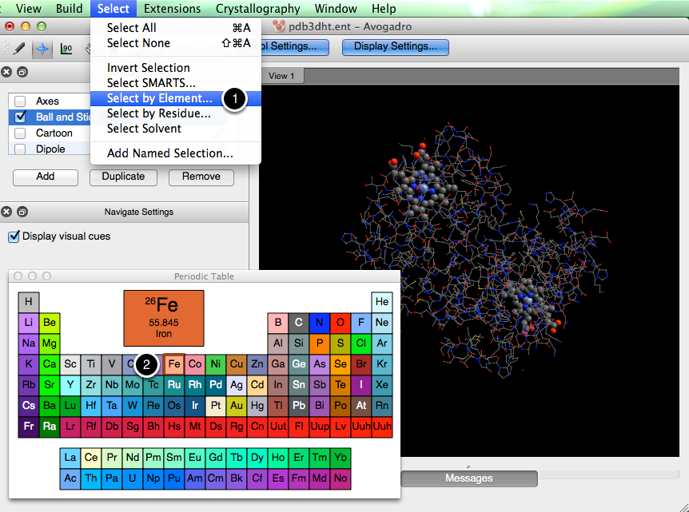

Coloring Part of a Molecules#
Coloring various parts of a molecule can provide a more visually stimulating way to display qualitative information.
Hemoglobin#
Below hemoglobin is depicted in its ball and stick form (file imported from PDB).

Select by Residue#
We can select specific residues in the molecule through the “Select” menu.

After typing in the residue name (this feature is case sensitive), and clicking “OK”, adjustments can be made to emphasize the selection.

After making a selection, click the wrench next to the display type you’re choosing to edit (in this instance the Ball and Stick display). When the dialog box pops up select “Objects”, and then click the blue table button in the bottom right hand corner. This feature adjusts what was initally considered an object (Hemoglobin), and edits the selection so that the display type will only encompass the heme residues.

From there you can edit other settings of the display type by clicking on “Settings” or “Colors”.

Select by Element#
Coloring parts of a molecule doesn’t have to end after a single adjustment. Say we want to stress that iron is at the center of the hem residue. We can go to the “Select” menu, “Select by Element…”, and choose to select all of the iron atoms in the molecule.

After the selection has been made, with the same procedure as before, we can choose a display type and edit the selection so that it only encompasses the iron atoms.

Then adjustments can be made to the settings.

The final product is a more intuitive view of qualitative information about hemoglobin.